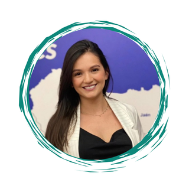
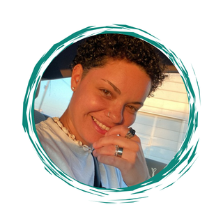

A equipa
As pessoas por detrás dos dados — analistas, estrategas e curiosas de formação.

Cientista de Dados & Consultora
Formada em Ciência Contábeis e cursando CET em Gestão de Aplicações de Informática, com certificações em Análise de Dados com Power BI e Python.

Analista de Dados & Desenvolvedora de Software
Formada em Análise e Desenvolvimento de Sistemas, CET em Gestão de Aplicações de Informática, com certificação em SQL Database Specialist, Power BI e Python, com experiência em Análise de Dados e Desenvolvimento de Softwares.